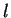
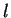
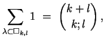

First Homework
Math 662, Young Tableaux
28 September, 2004
- Prove that conjugation of Young diagrams induces an
anti-automorphism for the dominance partial order on
partitions.
- Let
 be the partition of box shape with
rows and  columns.
Adapt the first proof of the identity
be the partition of box shape with
rows and  columns.
Adapt the first proof of the identity

to prove the corresponding weighted version
where
 is the -binomial coefficient of
Gauß.
(Replace each integer
is the -binomial coefficient of
Gauß.
(Replace each integer  in the definition of the ordinary
binomial coefficient by the -integer
.)
in the definition of the ordinary
binomial coefficient by the -integer
.)
- Prove that the following operations on tableaux commute with
standardization
- Schützenberger's jeu de taquin
- Schensted insertion.
- Formulate and prove a precise statement concerning the
reversibility of Schensted insertion.
- Following the proofs in the course about longest disjoint increasing
subsequences, formulate and prove a result about longest
disjoint decreasing subsequences, and the relation between
increasing and decreasing subsequences.
- Show that column insertion preserves Knuth equivalence of words.
- Prove or disprove: The `switching' defined in the
combinatorial proof that Schur functions are symmetric
defines an action of the infinite symmetric group on tableaux.


Next: About this document ...
Frank Sottile
2004-09-28